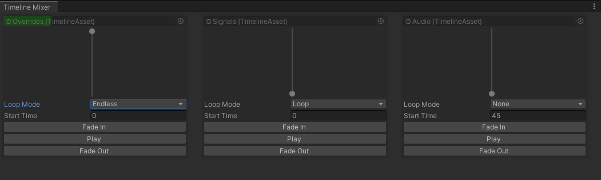

The Timeline Mixer Window allows you to monitor your timelines within the Timeline Mixer.
It can be found under Window -> Sequencing -> Timeline Mixer
- Green Progress Overlay: Timelines that are playing will have a green progress overlay on their object field.
- Vertical Slider: Indicates whether the timeline is faded in or out.
- Playback Buttons: Available for testing your timelines.
Loop Mode
You can set the loop mode to one of the following options:
- None: Plays the timeline to its maximum duration.
- Loop: Replays the timeline from the start once it reaches the end.
- Endless: Attempts to keep the timeline going beyond its duration, which can be useful for animation tracks with post-extrapolation.
Start Time
Set the start time in seconds for your timeline here.
Loop mode and Start time are only applied once a playback button is pressed